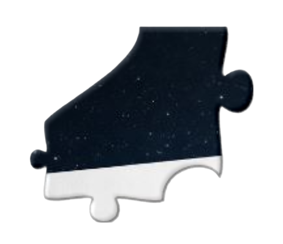
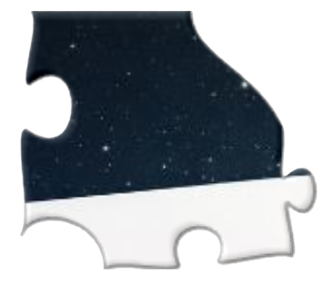
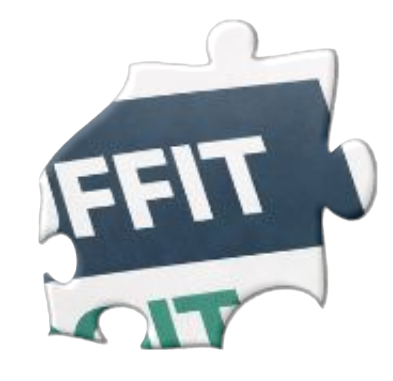
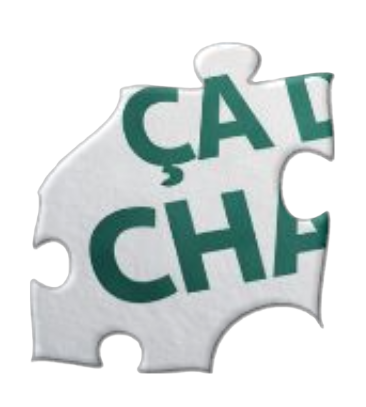
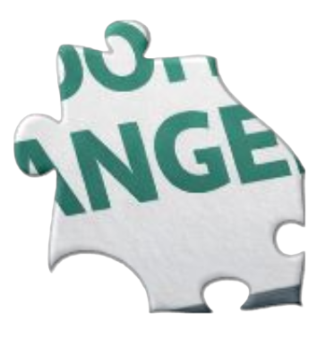
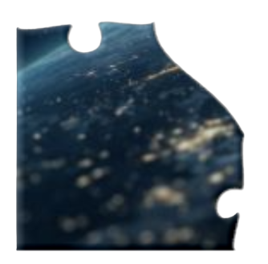
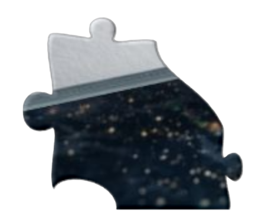
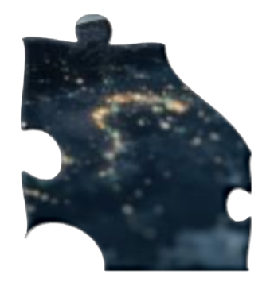

Depuis quelques années, un malaise grandit silencieusement dans la population : les familles peinent à boucler les fins de mois, les prix augmentent plus vite que les salaires, et le simple fait de vivre "normalement" devient un luxe.
La Suisse n'y échappe pas. La France non plus. L'Italie, l'Allemagne, l'Espagne, le Canada… partout, le constat est le même. Les systèmes politiques diffèrent, mais les problèmes restent identiques.
Pendant que les gouvernements annoncent :
Des "ajustements"
Des "réformes nécessaires"
Des "augmentations de salaires" qui ne couvrent même pas l'inflation
Des "mesures pour renforcer le pouvoir d'achat"
Les citoyens continuent de devoir renoncer :
Aux sorties
Aux loisirs
Aux vacances
Aux projets
À faire plaisir à leurs enfants
Aujourd'hui, le pouvoir d'achat est devenu le baromètre de la dignité.
Et pour beaucoup de foyers, ce baromètre est en chute libre.
Ce Livre Blanc naît de cette réalité
De cette urgence silencieuse. De ce besoin de comprendre, d'expliquer… et surtout d'agir autrement.
Il est écrit aujourd'hui parce que :
Les prix ne redescendent pas
Les salaires n'évoluent pas assez
Les solutions politiques ne suffisent plus
Les familles ont besoin de soutien concret
1
Informer
Exposer la réalité du pouvoir d'achat aujourd'hui, en Suisse comme ailleurs. Présenter les faits, les chiffres, les décisions politiques et leurs conséquences concrètes dans la vie des familles.
2
Alerter
Montrer ce qui ne fonctionne plus. Mettre en lumière les incohérences, les promesses irréalistes, les mesures qui donnent une impression d'aide sans résoudre le problème.
3
Inspirer
Proposer une nouvelle lecture de la situation. Donner une direction, une vision, un souffle. Rappeler qu'il existe des solutions humaines, des modèles d'entraide.
4
Proposer
Présenter une voie concrète et intelligente : 7 Ensemble, une approche basée sur la solidarité, la collaboration, et la capacité de chacun à contribuer, recevoir, avancer.
Ce document n'est pas fait pour diviser, ni pour accuser. Il est fait pour clarifier, éveiller, rassembler et proposer une alternative réaliste. Une alternative où personne ne reste au bord du chemin.
Ça soulage 5 minutes. Mais ça ne règle rien, car les prix continuent de monter plus vite que les salaires.
📌
Les familles renoncent… et les commerces locaux aussi
Les familles renoncent à :
Sortir
Se divertir
Partir en vacances
Faire plaisir aux enfants
Et le pire :
Elles renoncent à acheter local. On ne va plus chez le boucher du coin, chez l'artisan, chez le maraîcher. On finit chez les discounters.
Résultat : le tissu local meurt, les villages perdent leur vie, les centres-villes se vident.
📌
Un problème mondial, pas seulement européen
Les difficultés touchent :
L'EuropeL'AfriqueL'IndeL'Amérique du SudLes pays en guerre
La pauvreté crée la peur → La peur crée la division → La division nourrit les conflits
Le manque de moyens touche bien plus que l'économie : il fragilise la paix sociale.
📌
La racine du problème… et la solution
Les États agissent en surface. Les citoyens, eux, vivent à la racine du problème.
C'est précisément là que 7 Ensemble intervient :
Recréer du pouvoir d'achat grâce à la force du collectif. Avec un petit montant mis ensemble, on crée quelque chose qui ne s'arrête jamais.
1. Le panier de courses devenu un luxe
« Avant, je pouvais faire mes courses sans réfléchir. Aujourd'hui, je calcule tout, je compare tout… et j'enlève toujours quelque chose à la fin. »
2. Les factures d'électricité qui explosent
« On a baissé le chauffage. On se douche plus vite. On éteint les lumières… mais la facture grimpe quand même. »

3. Le carburant trop cher pour aller travailler
« Je travaille juste pour payer l'essence qui me permet d'aller travailler. C'est devenu absurde. »

4. Le logement qui prend tout le salaire
« Le loyer, c'est la moitié de mon salaire. Il reste quoi ensuite pour vivre ? »
5. L'endettement qui devient normal
« Je repousse mes factures. Je vis avec des rappels. Je n'avais jamais vécu ça avant. »
6. L'impression d'être abandonné par l'État
« Les aides ? Trop compliquées, trop lentes, trop floues. À la fin, j'ai abandonné. »
7. Le stress permanent pour boucler le mois
« Je n'ai plus un jour sans penser à l'argent. Ça use. »
8. La peur de l'avenir
« Je n'ose plus me projeter. Chaque année, c'est pire que la précédente. »
9. Travailler plus pour gagner moins
« Je fais des heures sup… mais j'ai l'impression de m'enfoncer. »

10. Le pouvoir d'achat qui s'évapore
« Tout augmente sauf mon salaire. C'est mathématique : je perds du pouvoir d'achat tous les mois. »
11. Les familles monoparentales au bord du gouffre
« Je suis seule avec deux enfants. Tout est trop cher. Je tiens, mais à quel prix ? »
12. Les retraités qui n'osent plus vivre
« J'ai travaillé toute ma vie pour faire attention à chaque centime. »
13. Les étudiants
« On nous dit d'étudier… mais comment si nos parents ne peuvent nous offrir des études ? »
14. Les couples qui éclatent sous la pression financière
« Tout allait bien chez nous… jusqu'à ce que l'argent devienne un sujet quotidien. »

15. Les prix qui doublent sans explication
« Le même produit, le même magasin, +30% en un an. On se fout de nous. »

16. L'illusion du "tout va bien" dans les médias
« À la télé, ils disent que l'économie va bien. Mais chez moi, je ne vois que l'inverse. »
17. Les frais médicaux qui deviennent un obstacle
« J'attends pour aller chez le dentiste. Je n'ai pas les moyens. »
18. La dépendance au crédit facile
« Les banques te prêtent rapidement… puis tu te retrouves enfermé dans un piège. »

19. Les familles qui n'arrivent plus à offrir des loisirs aux enfants
« C'est devenu un luxe. Alors on reste à la maison. »
20. Les salariés qui cumulent deux emplois
« Je travaille le soir pour survivre. Je ne vis plus, je tiens. »

21. La honte invisible
« Je ne veux pas dire que ça va mal. Je souris… mais à l'intérieur, je suis épuisé. »
22. La disparition de la classe moyenne
« On n'est ni pauvres ni riches. On survit au milieu. »

23. Les difficultés pour obtenir un prêt
« On m'a refusé un crédit à cause d'un rappel de facture. Je suis bloqué. »
24. L'impression que les règles changent toujours
« Les assurances, les banques, les factures… tout change, sauf mon revenu. »
👆 Cliquez sur l'image pour jouer au puzzle
Où en sommes-nous aujourd'hui ?
1️⃣
Le constat global (simple et honnête)
Aujourd'hui, travailler ne suffit plus à vivre correctement.
Pas parce que les gens ne font pas d'efforts.
Pas parce que les entreprises sont toutes "méchantes".
Mais parce que le système est devenu déséquilibré.
👉 Les revenus stagnent
👉 Les charges explosent
👉 Les règles deviennent incompréhensibles
👉 La pression est constante, diffuse, permanente
Résultat : Même ceux qui "font tout bien" n'y arrivent plus.
2️⃣
Ce que les États essaient de faire (et pourquoi ça ne marche pas)
Les États sont coincés dans une logique de gestion d'urgence permanente :
Aides ponctuelles
Primes temporaires
Subventions conditionnées
Nouvelles taxes "exceptionnelles"
Réformes complexes, lentes, parfois contradictoires
👉 Le problème : Ces mesures réparent des symptômes, pas la cause.
Elles :
Ajoutent de la complexité
Déplacent le problème
Créent de la dépendance
Opposent les groupes entre eux (salariés / indépendants / patron / retraités)
3️⃣
Pourquoi les salaires n'augmentent pas (le vrai sujet)
👉 Soulagement immédiat, mais intérêts + stress = piège.
B) Stratégies "risquées" (et pourquoi ça explose souvent)
Spéculer / "tenter des coups"
(crypto, trading, paris, "plans" rapides)
👉 Tu peux gagner… mais statistiquement, beaucoup perdent.
Lancer un "petit business express" sur internet
Des modèles où on te vend un rêve, puis… il faut payer pour "passer au niveau supérieur" : abonnement mensuel, formations, outils obligatoires, parfois même recruter d'autres gens pour "rentabiliser".
👉 Le problème n'est pas "entreprendre". Le problème, c'est quand l'outil est conçu pour pomper les gens au lieu de les aider.
C) Le net : accélérateur de solutions… et de pièges
Internet a donné un pouvoir énorme : apprendre, vendre, bosser, trouver des clients, se former.
Mais il a aussi industrialisé l'arnaque :
🇺🇸 USA
859'532
plaintes
16,6 milliards $
de pertes pour 2024 (IC3 - FBI)
🇨🇭 Suisse
35'727
signalements
58%
liés à la fraude (NCSC, 1er semestre 2025)
D) Les solutions "collectives" qui existent déjà
Tontines / ROSCACagnottes / crowdfundingAchats groupésMutuelles / caisses solidairesCoopérativesAMAP / paniers locauxBanques de tempsTroc / systèmes d'échange locauxColocation / habitat partagéCovoiturage organiséBibliothèques d'objetsGroupes d'entraideRevente / seconde main structuréeMonnaies locales
👉 Limite commune : souvent ça marche… tant que l'énergie humaine tient.
Le pont parfait vers 7 Ensemble
Beaucoup de solutions existent déjà… mais elles restent éparpillées, fragiles, ou fatigantes.
7 Ensemble vise à transformer ce réflexe collectif en cadre stable : clair, durable, protecteur, et pensé pour créer du souffle sans pousser les gens dans le risque.
👉 Une réponse humaine à un problème systémique
👉 Un regroupement intelligent plutôt qu'un sauvetage individuel
👉 Une autre façon de recréer de la marge, du souffle, du possible
🎭 Les illusions
On nous vend souvent des phrases qui sonnent bien… et qui finissent mal dans la vraie vie :
"On va protéger le pouvoir d'achat"
→ Mais derrière, c'est souvent une aide ponctuelle qui soulage 2 semaines et laisse le mois entier à finir.
"On simplifie"
→ Et on ajoute une couche : nouveaux critères, nouveaux formulaires, nouveaux délais.
"On aide les plus fragiles"
→ Oui, mais avec des seuils qui créent des injustices absurdes : tu gagnes 1 de trop, tu perds 100.
👉 L'illusion, c'est de faire croire que quelques rustines peuvent compenser un cadre devenu trop cher, trop tendu, trop complexe.
Zone vidéo - Extraits médias
Vidéos de discours politiques et promesses
C'est là que le système devient franchement bizarre (et épuisant) :
⚠️
Mesures temporaires qui deviennent permanentes
… sans jamais régler la cause.
⚠️
Aides qui coûtent cher à gérer
(administration, contrôles, exceptions) et qui finissent par rajouter de la complexité au lieu d'en enlever.
⚠️
Effets pervers
On oppose ceux "qui ont droit" à ceux "qui paient", ceux "qui reçoivent" à ceux "qui bossent", comme si c'était un match. Alors que… non.
💡
La fausse bonne idée de surtaxer les plus riches
En fin de compte, vouloir surtaxer les plus riches, c'est souvent une fausse bonne idée. Non seulement ça risque de les pousser à s'en aller ailleurs, mais en plus, ça ne règle pas le fond du problème.
L'égalité, ce n'est pas de niveler par le bas, c'est de donner à chacun la même occasion de contribuer de manière volontaire et équitable.
Avec une approche comme 7 Ensemble, on n'a pas besoin de forcer qui que ce soit : les plus aisés seront souvent d'accord pour participer d'eux-mêmes, surtout si c'est pour un projet collectif intelligent et non pas juste une ponction.
En gros, ce n'est pas en les pointant du doigt qu'on avancera, c'est en créant un cadre où tout le monde a envie de jouer le jeu.
💡 Les vraies solutions
Propositions concrètes (ce qui marche vraiment, quand c'est bien fait)
💰
Baisser les "coûts fixes" plutôt que bricoler des primes
Quand le loyer, l'énergie, la santé, l'assurance, les charges te mangent, une aide ponctuelle ne fait que retarder l'asphyxie.
📋
Rendre le système lisible et prévisible
Moins de "dossiers", moins de seuils absurdes, plus de règles simples. La stabilité vaut parfois plus qu'un bonus.
⚖️
Récompenser le travail sans punir le progrès
Aujourd'hui, tu peux être "trop juste" pour recevoir une aide… mais "pas assez riche" pour respirer. C'est une mécanique qui fabrique de la frustration.
🤝
Mutualiser intelligemment (sans infantiliser)
Achats groupés, caisses solidaires, négociation collective, fonds d'urgence clair et transparent… Le collectif, quand il est bien cadré, redonne du pouvoir aux gens.
👉 Et c'est là que 7 Ensemble entre en jeu :
Transformer le réflexe "survie individuelle" en cadre collectif stable, simple, et digne.
🇫🇷
France
Beaucoup d'aides ciblées, conditionnées, souvent temporaires.
Exemple : le chèque énergie 2025 (sous conditions de ressources)
➡️ Efficace à court terme, mais ça entretient la "gestion d'urgence" et la complexité.
🇨🇭
Suisse
Gros sujet : primes maladie.
Il existe des réductions de primes cantonales, et en 2025 le Conseil fédéral a acté l'entrée en vigueur (dès 1er janvier 2026) d'un contre-projet lié à l'initiative "Maximum 10% du revenu", avec contribution minimale des cantons au financement des réductions.
➡️ Ça va dans le bon sens, mais ça reste du "réglage" sur un poste qui continue de peser.
🇮🇹
Italie
Logique de bonus sociaux sur l'énergie (bonus luce/gas) avec critères ISEE et, selon périodes, contributions extraordinaires.
➡️ Aide utile, mais connue pour ses seuils/conditions et son côté "rustine".
👉 Dans les trois cas : on soulage, mais on ne recrée pas toujours un cadre où "vivre normalement" redevient simple.
Zone vidéo - Solutions en action
Exemples de réussites et initiatives inspirantes
Les gens ont déjà inventé des solutions collectives :
Achats groupés, coopératives, caisses solidaires, banques de temps, revente/seconde main organisée, etc.
Ça prouve une chose : l'instinct est bon → "se regrouper pour respirer".
Petit détour par l'histoire
1653
Le financier Lorenzo de Tonti formalise un principe de mise en commun qui donnera son nom à la "tontine".
Mais l'idée, elle, est bien plus ancienne : partout dans le monde, des cercles d'épargne tournante existent depuis des siècles, sous d'autres noms.
Principe
Des groupes de personnes mettent une somme régulière en commun, et chacun reçoit à tour de rôle un montant plus important. L'idée de base, c'est l'entraide et la discipline, sans passer par une banque.
Forces
C'est une solution qui permet d'accéder à une somme importante sans les contraintes des crédits classiques, certaines sans remboursement et ça repose sur la confiance et la solidarité.
Limites actuelles
Souvent, ça demande beaucoup de confiance, il y a des risques de non-paiement, et sur le long terme, ça peut devenir un peu flou ou fatigant à gérer.
En Europe, l'entraide financière "entre particuliers" existe aussi, mais elle est moins visible : d'un côté, beaucoup de besoins sont absorbés par les banques et l'État social ; de l'autre, dès qu'un système ressemble à une "mise en commun" informelle, les gens deviennent prudents (peur des ennuis, fiscalité floue, règles différentes selon pays).
Résultat : ça se fait, mais souvent en petit comité, discret, et sous d'autres formes.
👉 Moralité : ce n'est pas "une mauvaise idée". C'est une bonne idée… souvent pas assez protégée.
👉 Et c'est là que 7 Ensemble entre en jeu :
Garder la puissance du collectif (type tontine), mais avec des règles, de la transparence, des garde-fous, et une gouvernance claire.
Ce que 7 Ensemble apporte :
On prend ce principe qui existe déjà, mais on le sécurise et on l'améliore. Avec 7 Ensemble, on met en place des règles claires, on évite les flous, on renforce la transparence et on simplifie les choses pour que chacun puisse participer sereinement, sans avoir à se soucier de remboursements compliqués.
En gros, on garde la force de l'idée originale, mais on la rend encore plus solide et équitable pour tous.
✅ Synthèse / Conclusion
Aujourd'hui, le problème n'est pas un manque de volonté.
C'est un cadre devenu trop cher, trop complexe, trop instable.
Les revenus suivent mal
Les charges fixes montent vite
Les règles changent, se contredisent, se compliquent
Chacun finit par croire que "l'autre camp" est responsable
Résultat : même ceux qui font tout "comme il faut" s'épuisent.
Le message clé à retenir
Le sujet, ce n'est pas "gagner plus à tout prix".
C'est recréer un cadre où vivre normalement redevient possible : prévoir, respirer, encaisser un imprévu, sans honte et sans dépendance.
Et surtout : arrêter d'opposer les gens.
Salariés, indépendants, patrons, retraités : beaucoup sont pris dans le même étau.
C'est là que 7 Ensemble arrive :
Pas comme une promesse magique, mais comme une solution collective structurée pour redonner de la marge là où le système en a retiré.
L'idée est simple : organiser l'entraide, la rendre claire, stable, transparente, et la mettre à l'échelle grâce au numérique — pour que ce ne soit plus "chacun se débrouille", mais on avance ensemble.
👉 La suite du document explique concrètement comment 7 Ensemble fonctionne, ce qu'il change, et pourquoi il peut devenir une réponse durable là où les rustines ne suffisent plus.
👥 À propos
Je m'appelle Christophe Rossier (né en 1969).
Je ne viens pas donner des leçons. Je viens parler de réel.
Ma vie a basculé à un moment précis : un accident, puis un premier divorce, et avec ça des dettes, des coups durs, des pertes… et surtout cette sensation très claire :
Quand tu tombes, le système ne t'aide pas toujours à te relever.
Il te demande d'être solide au moment même où tu ne l'es plus.
"Et quand tu es déjà à terre, tu découvres un truc dur : certains mécanismes te demandent de prouver que tu vas mieux… avant même de t'aider à aller mieux."
"Quand tu glisses, on ne te tend pas toujours la main : on te demande d'abord des preuves, des papiers, des délais — et pendant ce temps, tu t'enfonces."
Avec les années, j'ai compris quelque chose :
Beaucoup de gens ne sont pas "en difficulté" parce qu'ils ne font rien.
Ils sont en difficulté parce qu'un jour, ils ont eu un choc, une rupture, une erreur, un imprévu… et derrière, tout s'enchaîne.
Et autour de moi, dans les discussions du quotidien, je retrouvais toujours la même phrase :
"On est nombreux dans ce cas… mais on reste chacun dans notre coin."
Alors j'ai décidé d'agir.
Pas en accusant un camp, pas en attendant une réforme miracle, mais en construisant une solution concrète.
Et grâce aux outils d'aujourd'hui, notamment l'IA, j'ai pu enfin structurer un projet que je porte depuis longtemps :
7 Ensemble est né d'une idée simple :
Aujourd'hui, le vrai problème n'est pas le manque de volonté, c'est le manque de marge. Quand le pouvoir d'achat est étranglé, on ne peut plus respirer, prévoir, ni aider les autres durablement.
Donc le projet va à la racine : recréer du souffle, d'abord, pour que la solidarité redevienne possible ensuite.
Le principe :
Un tout petit montant, accessible, mis en mouvement par un cadre collectif clair.
Une personne aide une autre personne… puis la chaîne continue. Et au lieu de laisser chacun se débrouiller seul, on s'organise pour que chacun soit porté par le groupe.
Concrètement, l'aide peut se faire via deux formats (sans entrer ici dans tous les détails) :
Triangulum
Une dynamique courte, simple, rapide.
La Pléiade
Une dynamique plus large, pensée pour aller plus loin.
L'objectif n'est pas de "promettre un miracle".
C'est de rendre le système stable, humain et motivant : dès les premières étapes, la personne voit du concret, comprend le mécanisme, et sent que sa contribution n'est pas "perdue" — elle sert à aider, et elle revient ensuite par la force du collectif.
👉 En résumé :
Cet Ensemble, c'est une façon moderne d'organiser l'entraide pour augmenter le pouvoir d'achat, redonner de la dignité, et permettre à chacun de se relever… ensemble.
7 Ensemble n'est pas un business.
Ce n'est pas un produit financier.
Ce n'est pas une promesse magique.
7 Ensemble est une proposition de société.
Une réponse simple à une question que tout le monde se pose en silence :
Pourquoi, en 2026, des millions de personnes travaillent, se battent, se lèvent chaque matin… et n'arrivent pourtant pas à vivre dignement ?
Nous vivons dans un monde où l'argent existe en abondance,
mais où la sécurité, la dignité et l'espoir sont devenus des luxes.
7 Ensemble part d'un constat brutal mais honnête :
👉 le système actuel laisse trop de gens sur le bord de la route.
🤝 Une entraide structurée, pas de la charité
7 Ensemble ne repose pas sur la pitié.
Ni sur la culpabilité.
Ni sur le "don".
Il repose sur un principe simple et puissant :
l'entraide mutuelle organisée.
Chacun participe à hauteur accessible.
Chacun sait exactement où il va.
Chacun aide, et peut être aidé.
Il ne s'agit pas de "perdre" de l'argent,
mais de mettre en commun une force collective.
💡 Le pouvoir de 21 euros
Entrer dans 7 Ensemble commence par un acte simple.
21 euros.
Pas pour s'enrichir vite.
Pas pour spéculer.
Mais pour dire :
"Je participe. Je fais partie de quelque chose de plus grand que moi."
Si je gagne, je gagne.
Si je ne gagne pas immédiatement, je n'ai pas perdu :
👉 j'ai aidé,
👉 j'ai soutenu,
👉 j'ai fait ma part.
Et surtout :
je n'ai pas été exclu.
🌱 Une responsabilité qui dépasse les frontières
7 Ensemble ne s'arrête pas à un pays.
Ni à une classe sociale.
Ni à un continent.
Parce que la misère n'a pas de passeport.
C'est pourquoi, dans certaines options,
l'entraide ne se limite pas à "chez nous".
Une partie de la solidarité peut – et doit – aller vers :
des zones touchées par la pauvreté extrême
des régions frappées par la guerre
des enfants et des familles qui n'ont aucune chance sans aide extérieure
Non pas comme un geste moral abstrait,
mais comme un devoir humain collectif.
Aider ici et ailleurs.
Pas l'un contre l'autre.
Ensemble.
🕊️ Pas une religion. Pas un dogme. Une alternative.
7 Ensemble ne promet pas le paradis.
Il ne prétend pas sauver le monde à lui seul.
Il ne se place au-dessus de personne.
Il propose simplement une autre voie :
moins d'isolement
moins de peur du lendemain
plus de liens
plus de chances
plus de dignité
Ce n'est pas une idéologie.
C'est une structure.
🔥 Une graine pour demain
Aujourd'hui, 7 Ensemble est un projet.
Demain, il peut devenir un mouvement.
Après-demain, peut-être un pilier social reconnu.
Mais chaque chose en son temps.
Le changement ne se décrète pas.
Il se construit.
Pas à pas.
Avec des gens réels.
Des histoires réelles.
Des vies réelles.
7 Ensemble, ce n'est pas croire en un miracle.
C'est décider collectivement que la galère ne doit plus être une fatalité.
Je m'appelle Christophe Rossier.
Je n'ai pas forcément réussi ma vie au sens où on l'entend habituellement.
Je ne suis pas devenu riche, je n'ai pas coché toutes les cases du "succès" tel qu'on nous l'a vendu.
Mais j'ai vécu.
J'ai lutté.
Et depuis mon accident, en 1989, j'ai fait un choix simple et irrévocable :
mettre l'humain au centre de tout ce que je fais.
Ma vie n'a peut-être pas été une réussite financière,
mais je crois profondément qu'elle a été — et qu'elle est encore — une réussite humaine.
Je me suis relevé.
J'ai appris.
Et je continuerai à me battre, jusqu'au bout, pour que ce monde devienne un endroit
où chacun a le droit d'être heureux, de vivre dignement,
et de ne plus avoir peur du lendemain.
7 Ensemble est né de cette conviction.
Pas d'un rêve naïf,
mais d'une foi lucide dans la force des êtres humains quand ils choisissent de faire ensemble.
Si vous êtes ici, en train de lire ces lignes,
c'est que vous ressentez, vous aussi, que quelque chose doit changer.
Alors merci.
Prenez soin de vous.
Prenez soin des autres.
Et surtout…
Soyez heureux. Je Vous Aime ❤️
Avec tout mon amour.
Et la conviction profonde que le changement commence ici. Ensemble.